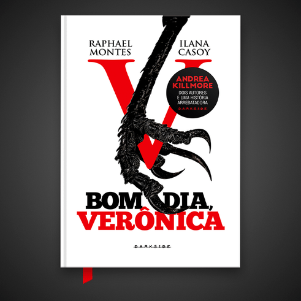

Chegou a hora de abrir a caixa e revelar muito mais que um mistério — uma parceria, um pacto vivo a quatro mãos, um suspense que atormentou leitores e despertou questionamentos. Qual a verdadeira identidade de Andrea Killmore? Por trás de um thriller hipnotizante e surpreendente, duas mentes sombrias, familiares ao perigo e a todos os amantes da literatura dark: Casoy e Montes.
A rotina da escrivã de polícia Verônica Torres era pacata, burocrática e repleta de sonhos interrompidos até aquela manhã. Um abismo se abre diante de seus pés de uma hora para outra quando, na mesma semana, ela presencia um suicídio inesperado e recebe a ligação anônima de uma mulher clamando por sua vida. Verônica sente um verdadeiro calafrio, mas abraça a oportunidade de mostrar suas habilidades investigativas e decide mergulhar sozinha nos dois casos. Um turbilhão de acontecimentos inesperados é desencadeado e a levam a um encontro com lado mais sombrio do coração humano.